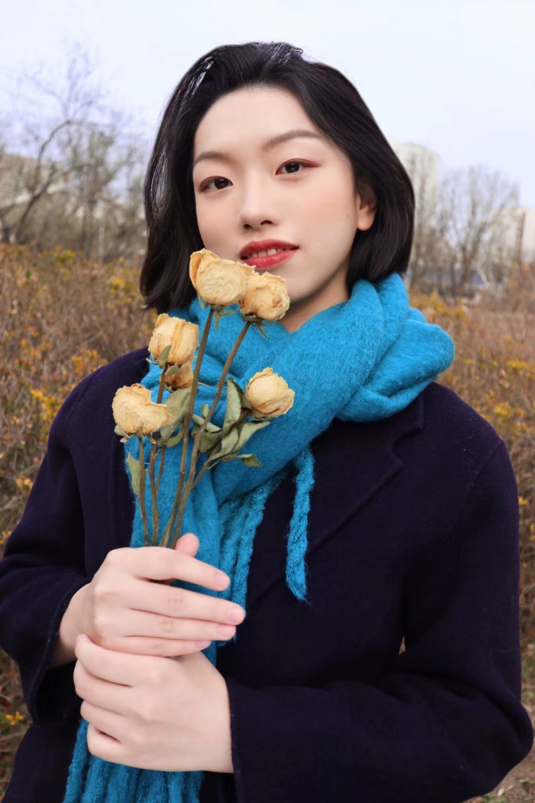

KE Manqi

EDUCATION
University of International Business and Economics, China
- Master of Translation and Interpreting, June 2022; Overall Result: 89.21/100 (Top 5%)
- Honors: The Second Prize of Academic Scholarship; Academic Scholarship for Freshmen
China University of Political Science and Law, China
- Bachelor of Arts (English), June 2020; Overall Result: 86.88/100 (Top 10%)
- Honors: Excellent Graduate of the Class of 2020; The Second Prize of Academic Scholarship (Top
10%); CUPL Taiwan Hanjie Scholarship (for active engagement in social activities)
- Study Abroad: The University of Montreal, Canada (selected as model student by China
Scholarship Council in Fall 2018)
EXPERIENCE
Marketer, Hai Run Law Firm
- Plan, develop, and execute more than 20 online and offline B2B branding activities in
collaboration with internal or external teams, including preparing campaign materials and
moderating meetings, and help lawyers maintain and develop relationships with more than 300
clients;
- Participate in well-known legal media’s research, write application materials, and arrange
interviews to increase the profile and awareness of the firm and lawyers; Achievements: for the
first time, the firm is ranked in Chambers Global Guide and Greater China Region Guide and
increases its rankings in The Legal 500, with 23 partners and senior partners recognized and
awarded;
- Manage, maintain, and optimize English content for the firm’s website, and oversee the English
content of news, announcements and posters placed on external media’s platforms and websites;
- Monitor relevant social discussions about the law firm and its key lawyers, and report findings
to directors
Translation Consultant (Intern), enValue Consulting
- Translated content for videos made by the firm from English into Chinese, created and formatted
subtitles, and managed the timing and placement of the subtitles;
- Edited the Chinese translation of more than 100,000 words for three books on entrepreneurship,
leadership, and corporate management
Translator (Intern), Siemens Ltd.
- Translated more than 24 newsletters on the compliance sector from Chinese into English and
dispatched them by email for senior managers;
- Kept up with trends in the sector and translated the latest technical standards or documents from
Chinese into English
EXTRACURRICULAR ACTIVITIES
Head of Transcreation Volunteer Group, Intellisia Institute
- Managed 10 translation projects as group head, including outlining project charters, tracking
timelines, checking in with team members for progress, and controlling budget;
- Assisted in managing transcreation intern Beijing Group, liaised between Guangzhou and
Beijing groups to place interns and assign tasks, and helped train the Institute's AI translation
product;
- Selected proper materials for translation and allocated tasks, edited translated results of more
than 300,000 words, and oversaw relevant posts on the Institute’s social media platforms;
- Provided English content for the Institute’s mobile app and assisted with its localization projects
including working with designers and developers;
- Monitored trends in the research of international politics, and wrote weekly reports for
researchers at the Institute
Volunteer, ICOMOS International Conservation Center-Xi'an
- Participated in the World Heritage Volunteers (WHV) 2020 - 2021 Campaign “World Heritage
Conservator for the Daming Palace” as a translation volunteer to raise awareness about the
history of the Daming Palace, its role in the Silk Roads network, and heritage conservation;
- Provided English content for the Centre's posts on its social media platforms and posters in
terms of the history and culture of the Tang Dynasty when the Daming Palace was built;
- Translated materials for experts in the field of cultural heritage and helped them prepare online
lectures to spread the understanding of the history of the Daming Palace, relevant conservation
practices, and challenges facing the Palace